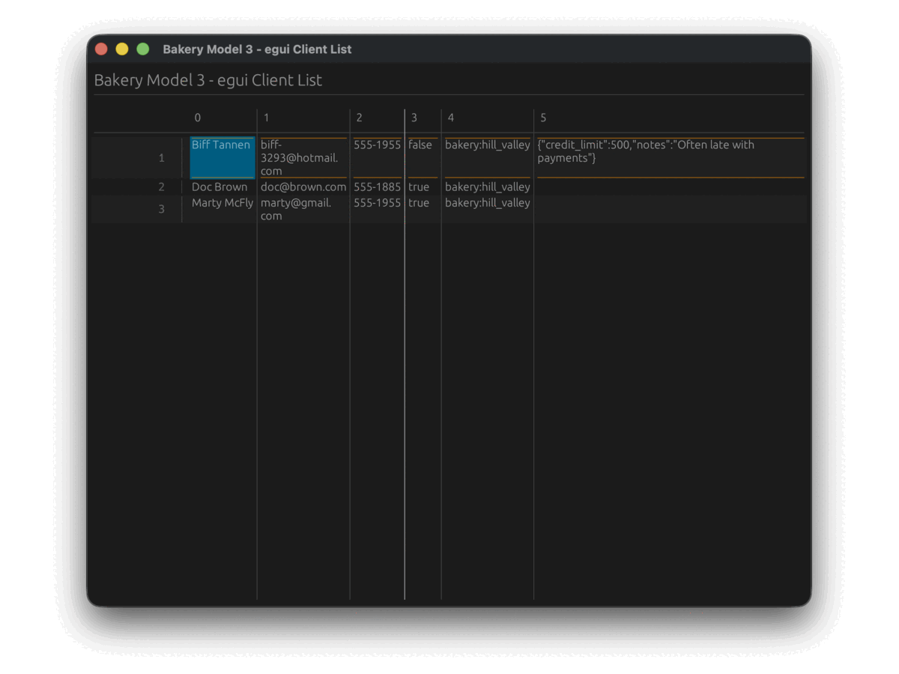

The Vantage Journey
Vantage didn’t start as a multi-backend entity framework. It started as a weekend experiment to see if Rust could build SQL queries without feeling like Rust.
This page walks you through each release — what changed, why it mattered, and how the API evolved from raw Postgres queries to a universal persistence layer.
- 0.0 — “DORM” (April–November 2024)
- 0.1 — Vantage is born (December 2024)
- 0.2 — Entity Framework & MDA (February 2025)
- 0.3 — The Great Separation (July–October 2025)
- 0.4 — The Type System Rewrite (November 2025–present)
- The bigger picture
graph LR
D[0.0 DORM] -->|rename| V1[0.1 Vantage]
V1 -->|entity framework| V2[0.2 MDA]
V2 -->|crate split| V3[0.3 UI Adapters]
V3 -->|type rewrite| V4[0.4 Type System]
style D fill:#555,color:#fff
style V1 fill:#4a7c59,color:#fff
style V2 fill:#2d6a8f,color:#fff
style V3 fill:#8f5a2d,color:#fff
style V4 fill:#7c2d8f,color:#fff
0.0 — “DORM” (April–November 2024)
The project was originally called DORM — the Dry ORM. It was Postgres-only, monolithic, and proudly opinionated. Everything lived in one crate.
The core idea was already there: Data Sets. Instead of loading records eagerly, you describe what you want and let the framework figure out the query.
#![allow(unused)]
fn main() {
let clients = Client::table(); // Table<Postgres, Client>
let paying = clients.with_condition(
clients.is_paying_client().eq(&true)
);
let orders = paying.ref_orders(); // Table<Postgres, Order>
for order in orders.get().await? {
println!("#{} total: ${:.2}", order.id, order.total as f64 / 100.0);
}
}Behind this innocent-looking code, DORM generated a single SQL query with subqueries, joins, and soft-delete filters — all derived from model definitions:
SELECT id,
(SELECT name FROM client WHERE client.id = ord.client_id) AS client_name,
(SELECT SUM((SELECT price FROM product WHERE id = product_id) * quantity)
FROM order_line WHERE order_line.order_id = ord.id) AS total
FROM ord
WHERE client_id IN (SELECT id FROM client WHERE is_paying_client = true)
AND is_deleted = false
No hand-written SQL. No query strings. The framework composed everything from relationship
definitions and table extensions like SoftDelete.
Early commits show a battle with Rust’s borrow checker — the infamous “lifetime hell.”
The solution came on April 28: switching to Arc for shared ownership. This unlocked
clonable data sources and composable table references that define the framework to this day.
Milestones
| Date | What happened |
|---|---|
| Apr 11 | First commit — queries, expressions, SQLite binding |
| Apr 18 | Insert/delete support, first Postgres tests |
| Apr 28 | Arc adoption — escaped lifetime hell |
| May 14 | Query::Join implemented |
| May 25 | has_one, has_many, relationship traversal |
| May 26 | Bakery model example — all entities defined |
0.1 — Vantage is born (December 2024)
On December 12, the framework was renamed from DORM to Vantage and published to crates.io for the first time. The API stayed the same — this was a branding milestone, not an architectural one.
A vantage point gives you a clear view of the landscape below. The framework gives you a clear view of your data — no matter where it lives or how complex the relationships are.
The same month brought the first Axum integration (bakery_api), proving that data sets could drive
REST endpoints naturally:
#![allow(unused)]
fn main() {
async fn list_orders(
client: axum::extract::Query<OrderRequest>,
pager: axum::extract::Query<Pagination>,
) -> impl IntoResponse {
let orders = Client::table()
.with_id(client.client_id.into())
.ref_orders();
let mut query = orders.query();
query.add_limit(Some(pager.per_page));
Json(query.get().await.unwrap())
}
}Tags v0.1.0 and v0.1.1 were published the same day. SQLx data source landed 11 days later.
0.2 — Entity Framework & MDA (February 2025)
Version 0.2 repositioned Vantage as a full Entity Framework with Model-Driven Architecture. The README doubled in size. The vision expanded from “clever query builder” to “how enterprises should structure business logic.”
The key insight: entities aren’t just database rows. They’re business objects that might live in SQL, NoSQL, a REST API, or a message queue — and your code shouldn’t care which.
#![allow(unused)]
fn main() {
impl Client {
fn table() -> Table<Client, Oracle> { /* ... */ }
fn registration_queue() -> impl Insertable<Client> { /* Kafka */ }
fn admin_api() -> impl DataSet<Client> { /* REST */ }
fn read_csv(file: String) -> impl ReadableDataSet<Client> { /* CSV */ }
}
}A developer calling Client::registration_queue().insert(id, client).await doesn’t
need to know it’s Kafka underneath. The SDK hides the transport — only the entity
contract matters.
This release also introduced the idea of struct projection — using different Rust types against the same data set to control which fields get queried:
#![allow(unused)]
fn main() {
struct MiniClient { name: String }
struct FullClient { name: String, email: String, balance: Decimal }
// Only fetches `name` from the database
let name = clients.get_id_as::<MiniClient>(42).await?.name;
}The monolith was getting heavy, though. Everything still lived in one crate, and adding a new database meant touching core code.
0.3 — The Great Separation (July–October 2025)
Version 0.3 broke the monolith into dedicated crates and bet heavily on SurrealDB as the primary backend. The trait-based architecture that defines Vantage today was born here.
One crate became many: vantage-expressions, vantage-table, vantage-dataset,
vantage-surrealdb, surreal-client, vantage-config, vantage-ui-adapters — each
with a focused responsibility.
Table definitions moved from static initialization to a builder pattern:
#![allow(unused)]
fn main() {
// 0.2 — static, Postgres-only
Table::new_with_entity("bakery", postgres())
.with_id_column("id")
.with_column("name")
.with_many("clients", "bakery_id", || Box::new(Client::table()))
// 0.3 — builder, any datasource
Table::<SurrealDB, Client>::new("client", ds.clone())
.with_id_column("id")
.with_column("name")
.with_column("email")
.with_many("orders", "client_id", || Client::order_table())
}Field accessors now return Expression instead of column objects — making them composable across
query builders:
#![allow(unused)]
fn main() {
// Build conditions from expressions
let active = clients.is_paying_client().eq(true);
let big_spenders = clients.balance().gt(1000);
let query = clients.with_condition(active).with_condition(big_spenders);
}The AnyTable type-erasure system arrived, enabling generic code that works with any
datasource:
#![allow(unused)]
fn main() {
let tables: Vec<AnyTable> = vec![
AnyTable::new(Client::table()), // SurrealDB
AnyTable::new(Product::table()), // SQLite
];
for table in &tables {
println!("{}: {} records", table.name(), table.count().await?);
}
}This release culminated with UI adapters for six frameworks — egui, GPUI, Slint, Tauri, Ratatui,
and Cursive — all driven by the same AnyTable interface.
The same bakery model powered a native desktop app (GPUI), a web app (Tauri), a terminal dashboard (Ratatui), and three more — without changing a single line of business logic.

0.4 — The Type System Rewrite (November 2025–present)
Version 0.4 rewrites the type system from the ground up. Custom types per datasource, CBOR
protocol, 7 persistence backends (SurrealDB, Postgres, MySQL, SQLite, MongoDB, CSV, REST API),
ActiveEntity / ActiveRecord patterns, typed columns, unified error handling, and a progressive
trait model where each persistence only implements what its engine supports.
The bigger picture
Looking at the trajectory:
| Version | Core idea | Backends | Crates |
|---|---|---|---|
| 0.0 | Can Rust build SQL smartly? | Postgres | 1 |
| 0.1 | Let’s publish this | Postgres | 1 |
| 0.2 | Entity Framework for Rust | Postgres | 1 |
| 0.3 | Traits, not inheritance | SurrealDB, SQLite | 10+ |
| 0.4 | Strict types, any persistence | SurrealDB, SQLite, Postgres, MySQL, MongoDB, CSV, REST API | 20+ |
What started as 16 commits in April 2024 is now 470+ commits, 189+ pull requests, and a framework that can drive the same business logic across five backends and six UI frameworks.
The destination hasn’t changed since day one: describe your data once, use it everywhere. Each version just made “everywhere” a little bigger.